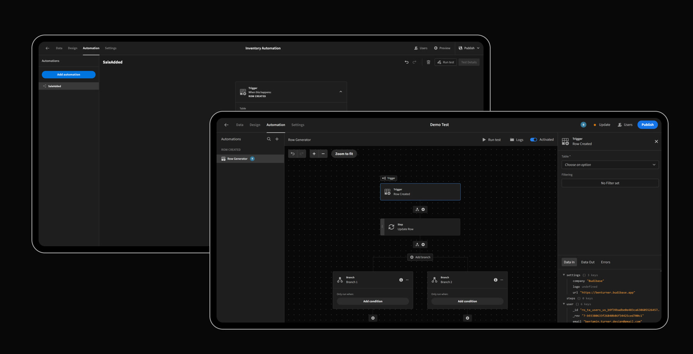

Context
As an in-house Product Designer at Budibase, I led the end-to-end UX redesign of the core workflow builder, the visual automation engine at the heart of the platform. Budibase is an open-source, low-code platform that enables businesses to rapidly build custom applications like customer portals, admin panels, and internal tools. The work had to support a wider strategic pivot: positioning Budibase as an AI-first automations platform, not only a better builder for today’s users.
Problem Statement
The existing workflow builder was functional, but poor data visibility made it difficult for users to debug and test their automations. That friction was a barrier to adoption, increased support volume, and left the product unprepared for Budibase’s planned shift to AI-first automations, which would depend on users clearly seeing data flowing through each step.

Design Process
User-Centric Research
I used Maze to design and run a paid research study with 25 active users. By analysing their feedback and quantitative data, a clear pattern emerged: the main problems were poor data visibility and unclear error messages. Users consistently highlighted a need for a better debugging experience, more intuitive testing, and a cleaner overall interface. Those requirements shaped a scalable, highly visible data framework rather than one-off UI fixes.
Driving Executive Alignment
Armed with compelling data from the study, I presented my findings and a clear design vision to the company’s leadership team. My proposed data framework and user-backed evidence secured their buy-in and helped shape the roadmap for both the immediate redesign and Budibase’s longer-term pivot toward AI-first automations.
Solution
| Improvement | Change | Benefit |
|---|---|---|
| Data In / Data Out | Inline tabs were added to show the data flowing into and out of each step of a workflow. | Provided complete transparency for easy data tracing. |
| Inline Error Logging | A dedicated tab now displays clear, understandable error messages for any failed step. | Eliminated guesswork and sped up troubleshooting. |
| New Sidebar Panel | All workflow controls were moved out of the main canvas and into a dedicated, contextual sidebar. | Created a decluttered UI and a cleaner editing experience. |
| Enhanced Canvas & UI | Zoom and pan controls were added, and the overall layout was made more compact and organised. | Improved management of large, complex workflows. |
Impact & Results
| Area | Outcome |
|---|---|
| User Adoption | The redesign led to a significant drop in user complaints, indicating a sharp rise in satisfaction and adoption of the feature. |
| Strategic Alignment | The data-driven roadmap secured executive buy-in and aligned the product with Budibase’s pivot toward an AI-first automations platform. |
| Support Overhead | Clearer error logging and an intuitive UI led to a marked decrease in related support queries from our user base. |
| AI-first groundwork | The scalable, highly visible data framework laid the structural foundation needed for AI-powered automations to sit on top of workflows users could already understand and trust. |
Conclusion
By translating insights from 25 users into an end-to-end UX redesign, I established a scalable, highly visible data framework that solved immediate debugging and adoption problems while laying essential structural groundwork. That foundation positioned Budibase for its strategic pivot into an AI-first automations platform, so the next phase of growth could build on workflows users already understood, not start from scratch.